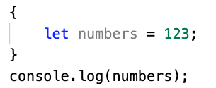
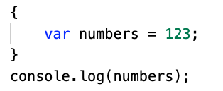

Theory
HTTP methods
We have worked with 4 types of HTTP methods so far. In the code it is a good codingstandard to have the method sorted by types. E.g. all GET-methods first.
GET:
Requests server for a resource, Retrieves resources.
POST:
Creates new resources with some exceptions
PUT/PATCH:
Updates a resource. (PUT: the whole reosurce. PATCH: part of the resource)
Patch is often best to use. It is used when you don’t want to update the entire resource.
And you often don’t want to update the id…
DELETE:
Deletes/removes a resource
Variables and scope
Const: immutable
Let: can change
Var: global (recommended not to be used in node.js)
Back in the days it was the only variable. Javascript only has “function scope” and no “block scope”.
This means that all variables inside a function will be on same level. A variable inside a forloop can be used outside because there is no block scope.
This theory is only true when variables of type “var” are used and it is why we should avoid using “var”.
In ES6 the “const” and “let” variables were introduced and they both works with block scope. As an example look at the code:
This will give an error. Numbers are not available outside the block.
This will print “123” because var is used, the parent block has access to it.